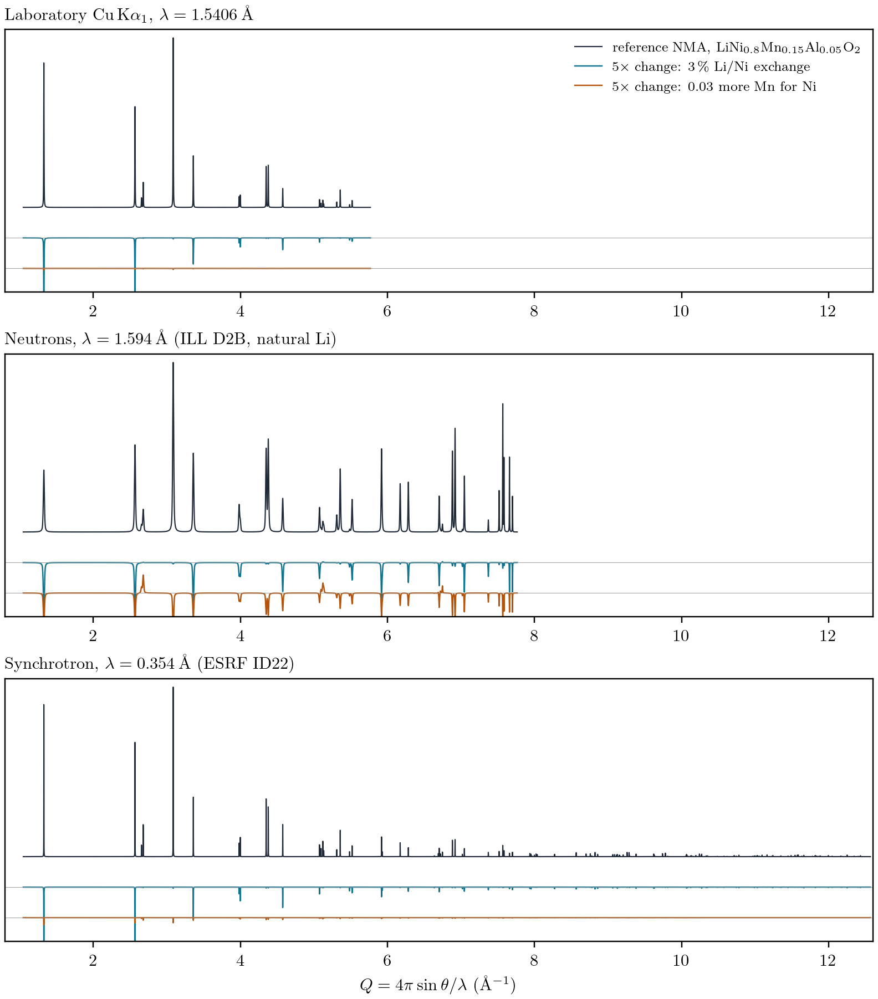

Before asking for beam time: for each structural question, two models of the cathode that differ by that question alone; the structure factors of both computed by diff-ref-struct's core for a laboratory diffractometer, for ILL D2B and for ESRF ID22; and the change of the powder pattern measured. The numbers say which instrument each question belongs to, and they are the feasibility argument of every proposal.
The share of the total scattering power carried by each element of NMA: \(\sum n f^2\) for X-rays, \(\sum n b^2\) for neutrons. Nickel dominates both; but in neutrons oxygen carries 42 %, lithium doubles its weight, and manganese scatters with a negative sign (\(b = -3.73\) fm against \(+10.3\) fm for Ni), so the identity of a metal on a site becomes visible.
| Element | X-rays (% of Σnf²) | Neutrons (% of Σnb²) |
|---|---|---|
| Li | 1.0 | 2.3 |
| Ni | 72.4 | 53.5 |
| Mn | 10.8 | 1.3 |
| Al | 1.0 | 0.4 |
| O | 14.8 | 42.5 |
Linear absorption at 1.594 Å, natural Li: NMA μ = 1.998 cm⁻¹, μR = 0.48; NCA (Co absorbs 37 b) μ = 2.092 cm⁻¹, μR = 0.502, for an 8 mm can at 60 % packing; lithium 92.6 % of the NMA absorption. With ⁷Li (99.9 %): μR = 0.041 (NMA), 0.064 (NCA).
\(R_\mathrm{diff} = \sum_d |I_B(d) - I_A(d)| / \sum_d I_A(d)\), over reflections grouped by \(d\). Probes: Cu Kα, 2\(\theta\) \(\le 90\)° (the thesis's range is not stated); neutrons, 1.594 Å, 2\(\theta\) \(\le 160\)° (D2B); X-rays, 0.354 Å, \(d \ge 0.5\) Å (ID22). \(R\bar{3}m\) is centrosymmetric, so X-ray anomalous terms are kept: they are real (Ni's f′ at Cu Kα, just below the Ni K edge) and create no artefact. Dopant cases put 0.03 per formula unit on the metal layer or on the lithium layer, the displaced Li going to the metal layer.
| Case | The change between the two models | Cu Kα (%) | D2B (%) | ID22 (%) | D2B / Cu | Gap |
|---|---|---|---|---|---|---|
| li-ni-3 | Li/Ni exchange of 3 % (0.03 Ni on the Li layer, 0.03 Li on the TM layer) | 6.48 | 5.66 | 6.18 | 0.9× | F01 |
| ni-li-def | Li-deficient: 0.03 Ni on the Li layer, no Li on the TM layer (Li0.97Ni1.03) | 5.26 | 5.16 | 5.18 | 1× | F01 |
| exch-vs-def | Where the displaced Li goes: Li/Ni exchange against a Li-deficient Li0.97Ni1.03O2 (0.03 Ni on the Li layer in both) | 5.41 | 5.73 | 5.58 | 1.1× | F01 |
| ni-or-mn-li | Which metal is in the Li layer: 0.03 Ni or 0.03 Mn (Li-deficient) | 0.21 | 6.86 | 0.96 | 32.8× | F01 |
| li-content | Li content 0.95 per f.u. (vacancies on the Li layer) | 0.92 | 1.35 | 0.73 | 1.5× | F02 |
| o-z | Oxygen position z + 0.001 (slab thickness) | 1.63 | 4.03 | 1.67 | 2.5× | F06 |
| o-vac | Oxygen vacancies, 2 % (O1.96) | 1.05 | 2.12 | 0.91 | 2× | F06 |
| mn-ni | Mn/Ni ratio: 0.03 more Mn for Ni on the TM layer | 0.16 | 6.62 | 0.89 | 40.6× | F03 |
| co-ni | Co for Ni: 0.05 Co replacing Ni on the TM layer | 0.19 | 6.15 | 0.51 | 32.9× | F03 |
| mg-site | Mg 0.03 on the TM layer or on the Li layer | 2.78 | 3.40 | 2.13 | 1.2× | F04 |
| na-site | Na 0.03 on the Li layer (the thesis) or on the TM layer | 2.61 | 2.67 | 1.95 | 1× | F04 |
| fe-site | Fe 0.03 on the TM layer or on the Li layer | 6.43 | 5.22 | 5.55 | 0.8× | F05 |
| sb-site | Sb 0.03 on the TM layer or on the Li layer | 13.74 | 3.49 | 11.15 | 0.3× | F05 |
| sc-site | Sc 0.03 on the TM layer or on the Li layer | 5.21 | 6.46 | 4.16 | 1.2× | F04 |
| y-site | Y 0.03 on the TM layer or on the Li layer | 10.35 | 4.47 | 8.67 | 0.4× | F04 |
| la-site | La 0.03 on the TM layer or on the Li layer | 14.64 | 4.69 | 12.48 | 0.3× | F04 |
\(R_\mathrm{diff}\) measures contrast, not precision. Where both probes see a parameter (the mixing), refining them together removes the correlations either leaves alone: with absorption, preferred orientation and displacement parameters in X-rays, with the Li occupancy in neutrons.

analysis/contrast.py.Natural lithium dominates the absorption (\(\approx 90\,\%\)); with Mn (13 b) and Co (37 b) the NMA and NCA reach \(\mu R \approx 0.48\) and 0.50 in an 8 mm vanadium can at 60 % packing: correctable, or a 6 mm can. ⁷Li would bring them to 0.04–0.06.
\(\mathrm{LiNi_{0.8}Mn_{0.15}Al_{0.05}O_2}\) in \(R\bar{3}m\) (hexagonal setting): Li 3a (0,0,0), metals 3b (0,0,½), O 6c (0,0,\(z\) = 0.2586); \(a\) = 2.870, \(c\) = 14.200 Å, a typical NMA cell, since the thesis gives two incompatible ones for this powder; B = 1.0 (Li), 0.4 (metals), 0.6 Ų (O). Peak shapes, background, absorption and preferred orientation are not modelled.